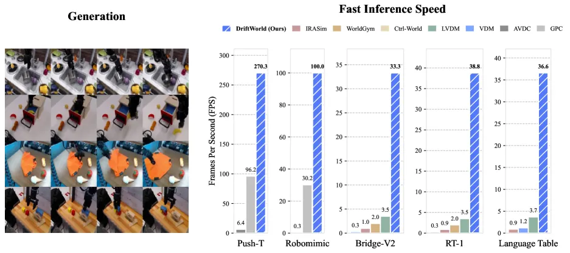
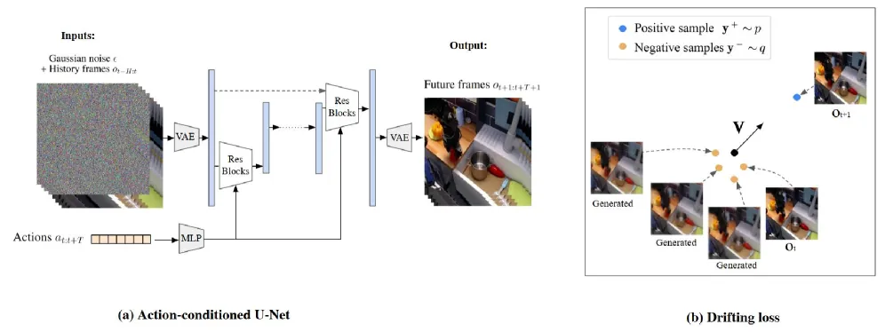
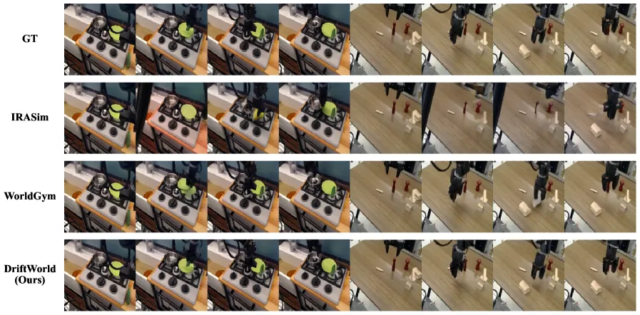
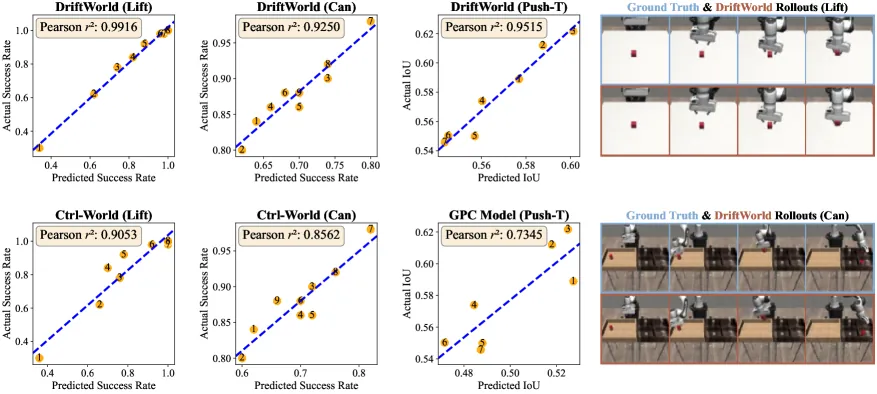

世界模型能让机器人在"想象"里预演动作再挑最优的执行，但这一价值取决于能否快速生成大量 rollout。DriftWorld 把 drifting 生成模型引入动作条件视频预测：训练时学一条 action-conditioned drift，推理时不再迭代去噪，而是一次前向就从当前观测 + 候选动作序列生成未来帧，达到 30+ fps，平均比 diffusion 世界模型基线快 17×。
世界模型对控制的实用价值，"hinges on generating many rollouts quickly"。当前 SOTA 世界模型大多是 diffusion-based，靠迭代式多步去噪生成未来帧——太慢，无法做实时规划所需的大规模 action search。
"recent work on generative predictive control reports that diffusion world model rollouts consume 90–95% of runtime, resulting in 3 or more seconds per decision cycle." —— rollout 太慢，导致无法评估上百个候选动作。
DriftWorld 的思路是换掉生成范式：不用 diffusion 的多步采样，而用 drifting generative models——训练时学一条把噪声先验映射到数据分布的 drifting field，推理时单次前向即可出高质量未来帧，从根本上去掉了迭代采样的瓶颈。这直接支撑两个应用：在线策略提升（在想象中 rollout 候选动作、挑最优执行）与离线策略评估（作为模拟器对真实机器人策略排名）。

问题设定是 action-conditioned video generation：给定历史观测 ot−F:t 与未来动作序列 at:t+T，预测执行动作后的未来观测 ot+1:t+T+1。DriftWorld 是首个基于 drifting 生成模型的动作条件世界模型，用 x = fθ(ε, c) 把噪声先验 ε 与条件 c（历史帧 + 未来动作）一步映射为未来视频帧。

与 diffusion 在推理时迭代精修不同，drifting 在训练时就把生成分布 q = f#pε 逐步演化向真实分布 p：定义 drifting field Vp,q(x)，令 xi+1 = xi + Vp,qi(xi)。该向量把样本吸引向真实未来帧、排斥离开生成的负样本。原始 drifting 用于类条件图像生成会用多个正样本；DriftWorld 只用单个正样本——因为给定当前帧与动作，正确的未来序列唯一。
把 class-conditional 图像上的 drifting 迁到 action-conditioned 视频，作者改造了三件事：(1) 由初始观测与动作序列定义的 conditional drifting field，并引入一个可在推理时无需重训、缩放强度 α（log-uniform over [1,4] 采样训练）的 action-accentuated 机制放大动作跟随；(2) 在 DINOv2/v3 的语义稠密特征空间计算 drifting loss，以在复杂真实场景保持画面锐利（消融显示去掉后画质骤降）；(3) frame-wise 的动作条件 U-Net，确保每帧精确对齐其动作。
在真实机器人数据上，额外用 motion weighting——对运动更大的空间位置加权 drifting loss，使夹爪运动被准确捕捉（FVD 显著更低）；再加第二阶段 self-forcing 训练——让模型以自己的生成帧（梯度 detach）为条件自回归 rollout，进一步提升长序列生成。
在 5 个视觉操作基准评测——真实数据集 Bridge-V2 / RT-1 / Language Table 与仿真环境 Push-T / Robomimic；基线含 IRASim、LVDM、VDM、GPC World Model、Ctrl-World、AVDC 等 diffusion 世界模型。指标为 SSIM / PSNR / LPIPS / FID / FVD 与每帧生成用时（均在单张 H100）。
| 数据集 | 最佳基线 SSIM↑ | DriftWorld SSIM↑ | 基线最快用时 | DriftWorld 用时↓ |
|---|---|---|---|---|
| Bridge-V2 | 0.741 (LVDM) | 0.821 | 0.285 s (LVDM) | 0.030 s |
| RT-1 | 0.757 (IRASim) | 0.836 | 0.284 s (LVDM) | 0.026 s |
| Language Table | 0.877 (IRASim) | 0.913 | 0.270 s (LVDM) | ~0.03 s |
DriftWorld 在 SSIM / LPIPS 上全面领先，且每帧用时约为最快 diffusion 基线的 1/10、比最慢的 IRASim/VDM 快 30–100×。诚实起见：在 Language Table 上 DriftWorld 的 PSNR 为 25.974，略低于 IRASim 的 26.846、LVDM 的 26.213——这是全文中它未拿第一的少数指标之一，但 SSIM 与 LPIPS 仍最优。

DriftWorld 能作为准确的离线模拟器，同时预测策略的绝对表现与相对排名。评估多个 diffusion policy 检查点，其在 DriftWorld 中的模拟得分与 ground-truth 模拟器高度相关：

把策略的候选动作在 DriftWorld 里 rollout、执行最高回报的（GPC-RANK, K=50），Push-T 的 IoU 从 0.635 提升到 0.781，且在远少于 diffusion 的推理时间内完成所有候选 rollout。消融（Table 5）表明：用 DINOv2/v3 特征空间对 Bridge-V2 画质至关重要（去掉后性能骤降）；motion weighting 与 self-forcing 对真实数据上的自回归生成不可或缺（前者显著降低 FVD）。
"our model relies on a robust pretrained feature extractor (DINOv2/v3) to maintain visual sharpness in complex scenes." —— 复杂场景的锐利度依赖外部 DINOv2/v3。
"the drifting framework requires higher memory usage than standard diffusion at training time, since the model needs to generate multiple negative samples (e.g., 64) per forward pass to compute the drifting loss." —— 每次前向要生成多份负样本（如 64），导致每份负样本可承载的 context / 生成帧数受 GPU VRAM 限制。
作者指出未来方向是增大 context 与 generation 窗口以改善 long-range temporal consistency，可能借助 sparse history 或带时间维的 video VAE。